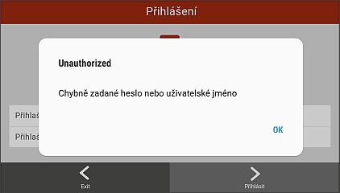
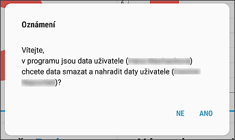

Přihlášení jiného uživatele
Jakmile se k tabletu přihlásí jiný uživatel než ten, který má stažená data, aplikace ověří uživatele na serveru (pouze v případě, kdy je online připojení).
Pokud se jedná o neoprávněnou osobu, pak tablet na tuto skutečnost upozorní upozorní následujícím hlášením.

Pokud se jedná o oprávněnou osobu, pak tablet upozorní následujícím hlášením na skutečnost, že data přihlašovanému uživateli nepatří.

Pokud uživatel chce pokračovat v přihlášení a vybere ANO, pak aplikace smaže všechna data předchozího uživatele a provede nahrání dat přihlašovaného uživatele.
Pokud uživatel vybere NE, aplikace se vrátí do přihlašovacího menu.